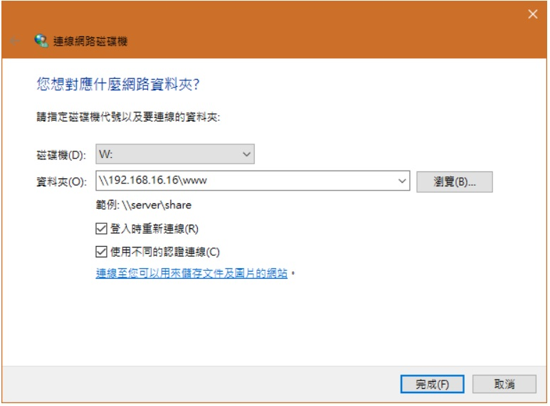

Applications:
openssh-server
samba-server
screen, .screenrc
vim, .vimrc, vim color: minimalist.vim
docker
gitbook
Open SSH Server
Installation and Setting
剛灌好系統先讓系統可以SSH
sudo apt install openssh-server
重新啟動
sudo systemctl restart sshd.service
sudo systemctl restart sshd
Samba Server
Samba Server Setting on Ubuntu
Install
sudo apt-get install sambaAdd a samba user
sudo adduser smbuser #smbusr can be anyone, SmithAdd a samba user password
sudo smbpasswd -a smbuserSetting samba configuration /etc/samba/smb.conf 檔案，然後，在檔案的尾巴加入下面這幾行後存檔離開。
[public] #"public" 名稱可以自行變更 path = /home/smbuser #這個是要分享的資料夾路徑 available = yes valid users = smbuser #這個是可以使用這個分享資料夾的使用者，要具有 path 所指定的路徑的權限才行 read only = no browseable = yes public = yes writable = yesRestart Samba serve
sudo service smbd restart
- Other Samba Configuration /etc/samba/smb.conf: 首先先找到設定檔裡面的 workgroup, 大約在29行附近，把 workgroup 設成和Windows 系統的一樣(可以到控制台\系統及安全性\系統查看)。 Change this to the workgroup/NT-domain name your Samba server will part of, workgroup = NOOBTW有關安全性問題，預設 Samba 會使用 Linux 帳號的密碼， 一般來說會建議保持原設定即可；如果要關掉 Samba 的認證，可以在裡面加上： security = share 上面大概是 Samba 的一些基本測試，重頭戲在下面， 如何設定要分享的資料夾？首先我們以www資料夾為例，直接將這段放在smb.conf 的最下面即可：
[www] comment = www path = /var/www browseable = yes read only = no create mask = 777 directory mask = 777- [www] 指的是要分享的資料夾的名稱，comment 則是描述，path 是 Linux 資料夾的路徑， browseable 是可否瀏覽，read only 是是否唯讀，剩下兩個 mask 則是檔案預設的權限。 最後請離開 smb.conf，我們要設定可以使用 Samba 的用戶。
Samba Client Setting on Windows
As Below:

Refer as: samba setting on Ubuntu and samba directory on Windows
VIM
Installation
sudo apt-get install vim
.vimrc Instance
Operation
- :so ~/.vimrc: Import vimrc setting
- :%!xxd: show binary file
- copy more lines in register, and then paste to a place
example:
- V is for a section would be like to copy.
- "kyy copy the section in register
- "kp" paste the section to your destnation place
- :line_number,$s/string.a/string.b/gc" Replace from string.a to string.b
- vim buffers and windows
open a few files to vim buffers
:ls - it show as belowvim file1 file2 file3
:[N]buffer - Jump to particular file:buffers (:ls or :files) 1 %a "file1" line 1 2 "file2" line 0 3 "file3" line 0
:badd - Add a file to buffer:2buffer or :buffer 2:badd path/to/file4
Screen
Installation
sudo apt-get install screen
.screensrc instance
Operation
- F7 - to detach screen session (to background)
- F8 - to kill current screen window
- F9 - to create a new screen
- ALT+S - make a separate window
- ALT+f - swith separate window
- ALT+q - leave a separate window
Docker
Refer as: Ubuntu Docker Install, Learn Docker and Docker Command Line
Installation
Install
sudo apt-get install docker.ioServe Checking
service docker statusAdd my account to docker group
sudo usermod -aG docker smithChecking Verion
docker version
Pull ubuntu 16.04 or latest
docker pull ubuntu:16.04 #or ubuntu:latest
- List images
docker imagesREPOSITORY TAG IMAGE ID CREATED SIZE ubuntu 16.04 e13f3d529b1a 4 days ago 115 MB
Export/Import a container
List contains
$ sudo docker ps -a CONTAINER ID IMAGE COMMAND CREATED STATUS PORTS NAMES 7691a814370e ubuntu:14.04 "/bin/bash" 36 hours ago Exited (0) 21 hours ago testexport the container
sudo docker export 7691a814370e > ubuntu.tar #ubuntu.tar is a exampleimport a image file to image
docker import ubuntu.tar unbuntu16.04:v1.0 # ubuntu.tar unbuntu16.04:v1.0 is a example
Run a image
sudo docker run -itv /home/smith/workspace/project:/home/mt2523 ubuntu/14.04:linkit_gfx bash
# /home/smith/workspace/project meaning is local directory.
# /home/mt2523 meaning is container directory
# -v: if local directory doest not exist, "-v" is able to remove
Gitbook
You have to install Node.js, npm, gitbook
- 3 reference URLs: GitBool Toolchain Documentation how to install node.js on ubuntu 16.04:Native
Node.js, npm Installation
sudo apt-get update
sudo apt-get install nodejs
sudo apt-get install npm
sudo npm install gitbook-cli -g
- Trouble Shooting
Executing
gitbook init, I got error message as/usr/bin/env: ‘node’: No such file or directory [fix] ln -s /usr/bin/nodejs /usr/bin/node
Write Markdown with ReText
sudo apt-get update
apt install retext
Trouble Shooting
bash: /home/smith/.local/bin/retext: No such file or directory
fix:
mkdir -p .local/bin
sudo ln -s /usr/bin/retext .local/bin/retext
Ubuntu Update
apt-get update
sudo apt-get update
sudo apt-get -y dist-upgrade
sudo apt-get clean
sudo apt-get autoremove
apt-get remove
Remove texlive-full
sudo apt-get remove texlive-full
但由於先前安裝此套件，會一併自動安裝相依套（dependencies), 所以需要再用autoremove清理。
sudo apt-get autoremove #or
sudo apt-get remove --auto-remove
但是這樣還不夠乾淨，因為預設的 remove 行為，會保留一些設定檔之類的遺物。 所以需要用 purge 的方式移除。針對單一套件使用 purge 方式徹底移除：
sudo apt-get purge texlive-full #or
sudo apt-get remove --purge texlive-full
Trouble Shooting
sudo must be owned by uid 0 and have the setuid bit set
You shouldn’t have a /usr/local/bin/sudo, that’s what’s breaking things (not the password change). Move it out of the way:
/usr/bin/sudo mv /usr/local/bin/sudo{,2}
and then tell your shell about it:
hash -r
That will restore the sudo functionality you’re used to. shareimprove this answer
Screen needs mode 777 with systemd service
The directory needs full permissions to read, write, and execute. You can do this command
chmod -R 777 /var/run/screen
Which will recursively change all folders/files permissions to 777, though typically less secure. You can also run sudo
chown -R $USER:$USER /var/run/screen
This will allow a typical user/or group full access, and will be more secure